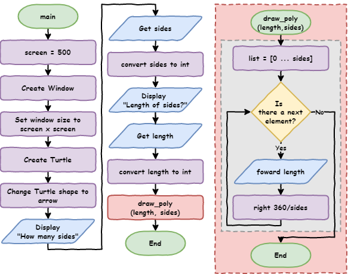

Python Turtle - Lesson 4#
Part 1: Functions#
What are functions?#
Functions are blocks of code that we can run several times in our program. So far in our programming, all our blocks of code are only run once. Even loop blocks are only run once. They repeat the code inside the block, but once the program has passed the loop, it won’t go back and run it gain.
With functions, we move a block of code outside of the main program sequence, then give it a name. The program can use that block as many times. To use it, the program calls the function name from within the main program sequence.
To understand this more clearly, we will start with my solution for lesson_3_ex_4.py.
Here is the flowchart for the solution:

Below is the code. You could type it into a new document, or you could just download the lesson_4_pt_1.py file.
1import turtle
2
3# set up screen
4screen = 500
5window = turtle.Screen()
6window.setup(screen, screen)
7
8# create turtle instance
9my_ttl = turtle.Turtle()
10my_ttl.shape("arrow")
11
12##################################
13## Using the tutrle command you ##
14## have learnt, draw a house. ##
15##################################
16
17# move pen
18my_ttl.penup()
19my_ttl.goto(-100, 0)
20my_ttl.pendown()
21
22# draw square
23for index in range(4):
24 my_ttl.forward(200)
25 my_ttl.right(90)
26
27# draw triangle
28for index in range(3):
29 my_ttl.forward(200)
30 my_ttl.left(120)
31
32# move pen
33my_ttl.penup()
34my_ttl.goto(-25, -200)
35my_ttl.pendown()
36
37# draw rectangle
38for index in range(2):
39 my_ttl.forward(50)
40 my_ttl.left(90)
41 my_ttl.forward(100)
42 my_ttl.left(90)
43
44# move pen
45my_ttl.penup()
46my_ttl.goto(-80, -100)
47my_ttl.pendown()
48
49# draw square
50for index in range(4):
51 my_ttl.forward(35)
52 my_ttl.right(90)
53
54# move pen
55my_ttl.penup()
56my_ttl.goto(45, -100)
57my_ttl.pendown()
58
59# draw square
60for index in range(4):
61 my_ttl.forward(35)
62 my_ttl.right(90)
63
64# move pen
65my_ttl.penup()
66my_ttl.goto(15, -150)
67my_ttl.pendown()
68
69# draw circle
70my_ttl.circle(5)
71my_ttl.hideturtle()
PRIMM:
Predict the type of house that the code will draw
Run the code and see if it resembles your prediction.
Remember the DRY principle (Don’t Repeat Yourself)? Look at the code. How well does it go in relation to DRY?
Can you identify any repetition?
Look at the comments:
1import turtle
2
3# set up screen
4screen = 500
5window = turtle.Screen()
6window.setup(screen, screen)
7
8# create turtle instance
9my_ttl = turtle.Turtle()
10my_ttl.shape("arrow")
11
12##################################
13## Using the tutrle command you ##
14## have learnt, draw a house. ##
15##################################
16
17# move pen
18my_ttl.penup()
19my_ttl.goto(-100, 0)
20my_ttl.pendown()
21
22# draw square
23for index in range(4):
24 my_ttl.forward(200)
25 my_ttl.right(90)
26
27# draw triangle
28for index in range(3):
29 my_ttl.forward(200)
30 my_ttl.left(120)
31
32# move pen
33my_ttl.penup()
34my_ttl.goto(-25, -200)
35my_ttl.pendown()
36
37# draw rectangle
38for index in range(2):
39 my_ttl.forward(50)
40 my_ttl.left(90)
41 my_ttl.forward(100)
42 my_ttl.left(90)
43
44# move pen
45my_ttl.penup()
46my_ttl.goto(-80, -100)
47my_ttl.pendown()
48
49# draw square
50for index in range(4):
51 my_ttl.forward(35)
52 my_ttl.right(90)
53
54# move pen
55my_ttl.penup()
56my_ttl.goto(45, -100)
57my_ttl.pendown()
58
59# draw square
60for index in range(4):
61 my_ttl.forward(35)
62 my_ttl.right(90)
63
64# move pen
65my_ttl.penup()
66my_ttl.goto(15, -150)
67my_ttl.pendown()
68
69# draw circle
70my_ttl.circle(5)
71my_ttl.hideturtle()
In summary we have two main types of repetition:
moving the pen
drawing the shape
When I wrote this code, I didn’t type it straight out, I copied and pasted a lot of the code and changed the magic numbers’ values. Copying and pasting is a clear indicator that you need to use a function. Why? Because functions are one of the main tools we can use to enforce the DRY Principle.
Creating functions#
Let’s look at how this works.
Take all the move pen code and consolidate that in one spot.
Below I have copied the first move pen action (
lines 17to20in the previous code)I have pasted them up to the top (
lines 4to7)I then turned them into a function
Replace the original code with a call to the function (
line 24).
Adjust your code so that it looks the same as below:
1import turtle
2
3
4def move_pen():
5 my_ttl.penup()
6 my_ttl.goto(-100, 0)
7 my_ttl.pendown()
8
9
10# set up screen
11screen = 500
12window = turtle.Screen()
13window.setup(screen, screen)
14
15# create turtle instance
16my_ttl = turtle.Turtle()
17my_ttl.shape("arrow")
18
19##################################
20## Using the tutrle command you ##
21## have learnt, draw a house. ##
22##################################
23
24move_pen()
25
26# draw square
27for index in range(4):
28 my_ttl.forward(200)
29 my_ttl.right(90)
30
31# draw triangle
32for index in range(3):
33 my_ttl.forward(200)
34 my_ttl.left(120)
35
36# move pen
37my_ttl.penup()
38my_ttl.goto(-25, -200)
39my_ttl.pendown()
40
41# draw rectangle
42for index in range(2):
43 my_ttl.forward(50)
44 my_ttl.left(90)
45 my_ttl.forward(100)
46 my_ttl.left(90)
47
48# move pen
49my_ttl.penup()
50my_ttl.goto(-80, -100)
51my_ttl.pendown()
52
53# draw square
54for index in range(4):
55 my_ttl.forward(35)
56 my_ttl.right(90)
57
58# move pen
59my_ttl.penup()
60my_ttl.goto(45, -100)
61my_ttl.pendown()
62
63# draw square
64for index in range(4):
65 my_ttl.forward(35)
66 my_ttl.right(90)
67
68# move pen
69my_ttl.penup()
70my_ttl.goto(15, -150)
71my_ttl.pendown()
72
73# draw circle
74my_ttl.circle(5)
75my_ttl.hideturtle()
PRIMM:
Predict what you think will happen
Run the code and check you prediction
Now lets investigate the code by unpacking it:
Line 4:def move_pen():create the function:In programming we call this defining a function.
The program reads and bookmarks the code, but does not execute it.
defis the key word for defining a function.move_penis the name we are giving the function.This name is how the program calls the function. It follows the same rules as variable names.
By using a descriptive name, we also remove the need for comments, as the code explains itself.
()is where we can put values. We’ll deal with this soon.:tells Python that an indented code block follows (the same as aforloop).
Lines 5to7are indented:This is the code that Python executes with a function call
The indentation rules are the same as the
forloopindentations can be many lines
multi-line indented code is called a block
indents should be four spaces
Line 24:move_pen()calls the function:At this point the program will go to
line 4run the code in the function.When Python finishes the function code, it returns to
line 24and continues with the rest of the code.
Passing arguments#
This works for our first pen movement. Since the coordinates are magic numbers, it won’t work for the rest. I would have to create a function for each movement of the pen. This defeats the purpose of functions. What we need is a way to send the coordinates to the function when we call it. We can. Python uses arguments to pass values to a function.
Looking back at our move_pen function in the code, we need to get rid of those magic numbers.
4def move_pen():
5 my_ttl.penup()
6 my_ttl.goto(-100, 0)
7 my_ttl.pendown()
What do the two magic numbers in my_ttl.goto(-100,0) represent? The x and the y of the coordinates. So let’s replace them with variables.
4def move_pen():
5 my_ttl.penup()
6 my_ttl.goto(x, y)
7 my_ttl.pendown()
But how do we assign values to x and y? We use arguments.
Change the function definition to
def move_pen(x, y):so it will accept two values.Change the function call in
line 24tomove_pen(-100,0)passing two values to the function.
Let’s unpack that:
def move_pen(x, y):says:When you call the
move_penfunction, you need to provide two values.First value is assigned to the variable
x.Second value is assigned to the variable
y.
move_pen(-100,0)says:Call the
move_penfunction.Use
-100as the first value (thexvalue).Use
0as the second value (theyvalue).
Your code should now look like the code below:
1import turtle
2
3
4def move_pen(x, y):
5 my_ttl.penup()
6 my_ttl.goto(x, y)
7 my_ttl.pendown()
8
9
10# set up screen
11screen = 500
12window = turtle.Screen()
13window.setup(screen, screen)
14
15# create turtle instance
16my_ttl = turtle.Turtle()
17my_ttl.shape("arrow")
18
19##################################
20## Using the tutrle command you ##
21## have learnt, draw a house. ##
22##################################
23
24move_pen(-100, 0)
25
26# draw square
27for index in range(4):
28 my_ttl.forward(200)
29 my_ttl.right(90)
30
31# draw triangle
32for index in range(3):
33 my_ttl.forward(200)
34 my_ttl.left(120)
35
36# move pen
37my_ttl.penup()
38my_ttl.goto(-25, -200)
39my_ttl.pendown()
40
41# draw rectangle
42for index in range(2):
43 my_ttl.forward(50)
44 my_ttl.left(90)
45 my_ttl.forward(100)
46 my_ttl.left(90)
47
48# move pen
49my_ttl.penup()
50my_ttl.goto(-80, -100)
51my_ttl.pendown()
52
53# draw square
54for index in range(4):
55 my_ttl.forward(35)
56 my_ttl.right(90)
57
58# move pen
59my_ttl.penup()
60my_ttl.goto(45, -100)
61my_ttl.pendown()
62
63# draw square
64for index in range(4):
65 my_ttl.forward(35)
66 my_ttl.right(90)
67
68# move pen
69my_ttl.penup()
70my_ttl.goto(15, -150)
71my_ttl.pendown()
72
73# draw circle
74my_ttl.circle(5)
75my_ttl.hideturtle()
PRIMM
Predict what this code will now do.
Run the code to check if your prediction was correct.
Investigate the code by using the debugger and stepping your way through the program.
Arguments vs Parameters
In programming discussions the terms arguments and parameters are often swapped around. It is safe to use either term, but they do have distinct meanings:
arguments are the values the main program passes to a function
parameters are the variables named in the function definition
Go through the code and replace the remaining # move pen blocks with a move_pen() call.
Your code should now look like this:
1import turtle
2
3
4def move_pen(x, y):
5 my_ttl.penup()
6 my_ttl.goto(x, y)
7 my_ttl.pendown()
8
9
10# set up screen
11screen = 500
12window = turtle.Screen()
13window.setup(screen, screen)
14
15# create turtle instance
16my_ttl = turtle.Turtle()
17my_ttl.shape("arrow")
18
19##################################
20## Using the tutrle command you ##
21## have learnt, draw a house. ##
22##################################
23
24move_pen(-100, 0)
25
26# draw square
27for index in range(4):
28 my_ttl.forward(200)
29 my_ttl.right(90)
30
31# draw triangle
32for index in range(3):
33 my_ttl.forward(200)
34 my_ttl.left(120)
35
36move_pen(-25, -200)
37
38# draw rectangle
39for index in range(2):
40 my_ttl.forward(50)
41 my_ttl.left(90)
42 my_ttl.forward(100)
43 my_ttl.left(90)
44
45move_pen(-80, -100)
46
47# draw square
48for index in range(4):
49 my_ttl.forward(35)
50 my_ttl.right(90)
51
52move_pen(45, -100)
53
54# draw square
55for index in range(4):
56 my_ttl.forward(35)
57 my_ttl.right(90)
58
59move_pen(15, -150)
60
61# draw circle
62my_ttl.circle(5)
63my_ttl.hideturtle()
Run the code to make sure the house is still drawn.
Notice that our line count is down from the original 71 to 63.
Testing tips
It is good to frequently test your code.
Each time you change your code, test it.
Try not to make too many changes between testing, it makes it harder to identify your errors.
If function passes its test, you don’t have to testing it again, unless your change the function.
If your functions passed their tests, then you know the error is elsewhere in the code.
Functions in Flowcharts#
Flowcharts don’t represent whole programs, they represent algorithms.
What are algorithms?
Algorithms are a set of rules to follow to solve a problem. A cake recipe is an algorithm to bake a cake. You follow an algorithm to perform long division in maths. In computers, you code instructions are the algorithms.
When a program consists of smaller algorithms (eg. functions), create a flowchart for each algorithm. Then show where algorithms call other algorithms.
We show the name of the function in the terminator symbol. Main is the name of the starting algorithm.
Here is the flowchart of the code with the move_pen function. The function calls use the procedure symbol (I have coloured them red to make them stand out).

Shape functions#
When we first looked for repetition, we also identified the drawing shapes repetition. Lets make a function to draw squares.
From the current code:
copy one of the
# draw squareblocks to the top of the codechange it into a function that draws a square called
draw_squarethe function will need to accept a value for the
lengthof the square’s sidethen replace all the
# draw squareblocks with an appropriatedraw_squarecall
Where should I place functions?
Function definitions are place at the top of the code, right after the import statements.
This has two reasons:
If the function is not defined before you call it, your code will generate a
NameError.Placing all your functions at the start improves makes them easier to find them. This improves your code’s maintainability
Once you have made draw_square function changes, you code should look like:
1import turtle
2
3
4def move_pen(x, y):
5 my_ttl.penup()
6 my_ttl.goto(x, y)
7 my_ttl.pendown()
8
9
10def draw_square(length):
11 for index in range(4):
12 my_ttl.forward(length)
13 my_ttl.right(90)
14
15
16# set up screen
17screen = 500
18window = turtle.Screen()
19window.setup(screen, screen)
20
21# create turtle instance
22my_ttl = turtle.Turtle()
23my_ttl.shape("arrow")
24
25##################################
26## Using the tutrle command you ##
27## have learnt, draw a house. ##
28##################################
29
30move_pen(-100, 0)
31draw_square(200)
32
33# draw triangle
34for index in range(3):
35 my_ttl.forward(200)
36 my_ttl.left(120)
37
38move_pen(-25, -200)
39
40# draw rectangle
41for index in range(2):
42 my_ttl.forward(50)
43 my_ttl.left(90)
44 my_ttl.forward(100)
45 my_ttl.left(90)
46
47move_pen(-80, -100)
48draw_square(35)
49move_pen(45, -100)
50draw_square(35)
51move_pen(15, -150)
52
53# draw circle
54my_ttl.circle(5)
55my_ttl.hideturtle()
We are now down to 55 lines of code.
There is no more repetition in the main code, but there is still three code blocks remaining. Notice how the rest of the code is easier to read? Therefore, we will transform the # draw triangle, # draw rectangle and # draw circle code blocks into functions.
This will provide two benefits:
It will improve maintainability by making the code more readable.
If we want to extend the drawing we can easily add more rectangles, triangle and circles.
See if you can change all three blocks into functions. Remember to test each function when you create it.
When you finish your code should look like this:
1import turtle
2
3
4def move_pen(x, y):
5 my_ttl.penup()
6 my_ttl.goto(x, y)
7 my_ttl.pendown()
8
9
10def draw_square(length):
11 for index in range(4):
12 my_ttl.forward(length)
13 my_ttl.right(90)
14
15
16def draw_triangle(length):
17 for index in range(3):
18 my_ttl.forward(length)
19 my_ttl.left(120)
20
21
22def draw_rectangle(long, short):
23 for index in range(2):
24 my_ttl.forward(short)
25 my_ttl.left(90)
26 my_ttl.forward(long)
27 my_ttl.left(90)
28
29
30def draw_circle(rad):
31 my_ttl.circle(rad)
32
33
34# set up screen
35screen = 500
36window = turtle.Screen()
37window.setup(screen, screen)
38
39# create turtle instance
40my_ttl = turtle.Turtle()
41my_ttl.shape("arrow")
42
43##################################
44## Using the tutrle command you ##
45## have learnt, draw a house. ##
46##################################
47
48move_pen(-100, 0)
49draw_square(200)
50draw_triangle(200)
51move_pen(-25, -200)
52draw_rectangle(100, 50)
53move_pen(-80, -100)
54draw_square(35)
55move_pen(45, -100)
56draw_square(35)
57move_pen(15, -150)
58draw_circle(5)
59my_ttl.hideturtle()
That’s our final code:
Down from
71lines to59lines.Easier to read.
Easier to test and troubleshoot errors.
Maybe the easiest way to see the improvement in our code is to look at the flowchart.

Part 1 Exercises#
In this course, the exercises are the make component of the PRIMM model. So work through the following exercises and make your own code.
Exercise 1#
Download lesson_4_ex_1.py file and save it to your lesson folder. Below is its code.
1import turtle
2
3# set up screen
4screen = 500
5window = turtle.Screen()
6window.setup(screen, screen)
7
8# create turtle instance
9my_ttl = turtle.Turtle()
10my_ttl.shape("arrow")
11
12############################################
13## Convert the code below using functions ##
14############################################
15
16# move pen
17my_ttl.penup()
18my_ttl.goto(0, -200)
19my_ttl.pendown()
20
21# draw head
22my_ttl.color("black", "yellow")
23my_ttl.begin_fill()
24my_ttl.circle(200)
25my_ttl.end_fill()
26
27# move pen
28my_ttl.penup()
29my_ttl.goto(-75, 0)
30my_ttl.pendown()
31
32# draw eye
33my_ttl.color("black", "black")
34my_ttl.begin_fill()
35my_ttl.circle(50)
36my_ttl.end_fill()
37
38# move pen
39my_ttl.penup()
40my_ttl.goto(75, 0)
41my_ttl.pendown()
42
43# draw eye
44my_ttl.color("black", "black")
45my_ttl.begin_fill()
46my_ttl.circle(50)
47my_ttl.end_fill()
48
49# move pen
50my_ttl.penup()
51my_ttl.goto(-100, -75)
52my_ttl.pendown()
53
54# draw mouth
55my_ttl.color("black", "black")
56my_ttl.begin_fill()
57for index in range(2):
58 my_ttl.forward(200)
59 my_ttl.right(90)
60 my_ttl.forward(25)
61 my_ttl.right(90)
62my_ttl.end_fill()
63
64my_ttl.hideturtle()
Follow the instructions in the comments and adapt the code so it uses functions.
Exercise 2#
Download lesson_4_ex_2.py file and save it to your lesson folder. Below is its code.
1import turtle
2
3# set up screen
4screen = 500
5window = turtle.Screen()
6window.setup(screen, screen)
7
8# create turtle instance
9my_ttl = turtle.Turtle()
10my_ttl.shape("arrow")
11
12############################################
13## Use you knowledge of Python and Turtle ##
14## to draw a car. Use functions to ensure ##
15## that you Do not Repeat Yourself. ##
16############################################
Follow the instructions in the comments and write a program that draws a car.
Part 2: User Input#
Introduction#
Download the lesson_4_pt_2.py file and save it to your lesson folder.
1import turtle
2
3
4def draw_poly(length, sides):
5 for index in range(sides):
6 my_ttl.forward(length)
7 my_ttl.right(360 / sides)
8
9
10# setup window
11screen = 500
12window = turtle.Screen()
13window.setup(screen, screen)
14
15# create instance of turtle
16my_ttl = turtle.Turtle()
17my_ttl.shape("turtle")
18
19sides = 9
20length = 100
21
22draw_poly(length, sides)
PRIMM
Predict what you think will happen.
Run the code and see how close your prediction is.
Modify the code so the shape fits within the window.
When we run the code, part of the shape is off the screen. This is not a big problem. Change the length from 100 to 80. This is something quite simple for you because you have learnt how to code. What about people who haven’t?
How do we make our programs interactive by getting input from users who cannot code?
Making your program interactive#
The simplest way to make your program interactive is to use the input command. It will use the Shell to ask the user for their input.
To do this change:
line 19tosides = input("How many sides?> ")line 20tolength = input("How long are the sides?> ")
Your code should look like the following:
1import turtle
2
3
4def draw_poly(length, sides):
5 for index in range(sides):
6 my_ttl.forward(length)
7 my_ttl.right(360 / sides)
8
9
10# setup window
11screen = 500
12window = turtle.Screen()
13window.setup(screen, screen)
14
15# create instance of turtle
16my_ttl = turtle.Turtle()
17my_ttl.shape("turtle")
18
19sides = input("How many sides?> ")
20length = input("How long are the sides?> ")
21
22draw_poly(length, sides)
PRIMM
Predict what you think will happen.
Run the code. Did it do what you thought?
Did you predict:
a prompt appearing in the Shell like the image below?
the program raising an error.

1Traceback (most recent call last):
2 File "<string>", line 22, in <module>
3 File "<string>", line 5, in draw_poly
4TypeError: 'str' object cannot be interpreted as an integer
Let’s investigate by:
unpacking the code we changed
explaining the error
Unpacking line 19 (note line 20 is virtually the same):
input: is the keyword that tells Python to wait for an input from the user from the Shell.("How many sides?> ")tells Python what prompt to write to the Shell before it waits for a response.sides =takes whatever the user enters and assigns it to the variablesides
Now for the error. This is a TypeError and to understand it we need to learn about data types.
Data types#
Variables in Python can hold different types of data. The four types of data we will use are:
integer numbers (
int)stores whole numbers
identified by a whole number
floating point numbers (
float)stores numbers that have a decimal points
identified by having a decimal point with at least one number after it. For example,
1is and integer,1.0is a float
strings (
str)stores characters like letters, numbers and special characters
start and end with
"or'(just make sure they are the same the at beginning or end)numbers can be a string. For example, a phone number like
0432 789 367is a string not and integer or float. It contains spaces and you would never do a calculation with it.
Booleans (
bool)store either
TrueorFalse
Using data types helps Python work out what kind of operations it can do with the variable. For example, it wouldn’t make much sense to divide a string. Python also has special operations called methods. Each data type has its own collection of methods. You will learn more about data types throughout your programming journey.
Now, lets look at the error again:
1Traceback (most recent call last):
2 File "<string>", line 22, in <module>
3 File "<string>", line 5, in draw_poly
4TypeError: 'str' object cannot be interpreted as an integer
Breaking the error down:
Error
line 4:TypeError: 'str' object cannot be interpreted as an integer:This tells us that this involves two data types (string and integer).
It says we are trying to use a string when Python is expecting an integer.
Traceback:When looking at a
Tracebackalways check the last line firstError
line 3tells us that the error occurred atline 5in the code:for index in range(sides):Here we are trying to use the values in
sidesin arangefunction, but Python thinks it is a string.let’s look at where we got the value for
sides
Line 19:sides = input("How many sides?> ")We took the value the user entered and assigned it to
sides.I entered
3which is an integer.Why does Python think it’s a string?
When Python accepts a value using the input function, it is always accepted it as a string. This is because strings can contain all characters.
How do we fix this? Luckily, we can convert a variable’s data type.
Converting data types#
There is a function to convert any data type into each other data type (other than Boolean).
If we had a variable called var:
convert
var→ string, usestr(var)convert
var→ integer, useint(var)convert
var→ a float, usefloat(var)
There is a great deal more to this, but at the moment this is all you need to know.
Let’s change our code. Take the strings returned by the input function and convert them into integers.
Here is the finished code as a flowchart. Note that we use the same symbol for input as we do for output, with different wording.

Below is the finished code, with the changes on lines 19 and 20.
1import turtle
2
3
4def draw_poly(length, sides):
5 for index in range(sides):
6 my_ttl.forward(length)
7 my_ttl.right(360 / sides)
8
9
10# setup window
11screen = 500
12window = turtle.Screen()
13window.setup(screen, screen)
14
15# create instance of turtle
16my_ttl = turtle.Turtle()
17my_ttl.shape("turtle")
18
19sides = int(input("How many sides?> "))
20length = int(input("Length of sides?> "))
21
22draw_poly(length, sides)
PRIMM
Predict what you think will happen
Run you code and see if your predictions were correct
Investigate by trying to enter different values for sides and length:
draw different shapes
what are the correct values to make your turtle draw a circle?
what happens when you enter a float or a string?
Modify your code to use different prompts
Part 2 Exercise#
In this course, the exercises are the make component of the PRIMM model. Work through the following exercises and make your own code.
Exercise 3#
Download lesson_4_ex_3.py file and save it to your lesson folder. Below is its code.
1###############################################
2## write a program that askes the user for a ##
3## number and then counts up to that number. ##
4###############################################
Follow the instructions in the comments and use your Python knowledge to create a count up app. Remember to apply the DRY principle